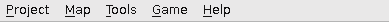

[User Interfaces]->[Main Window]->[Menu Bar]

The menu bar commands are split into five sections. To execute a command from a given section, simply click the section then click the command from the drop down menu.
NOTE: Most of the commands can also be located on the toolbar, just look for the corresponding icons.
Sections Documentation: